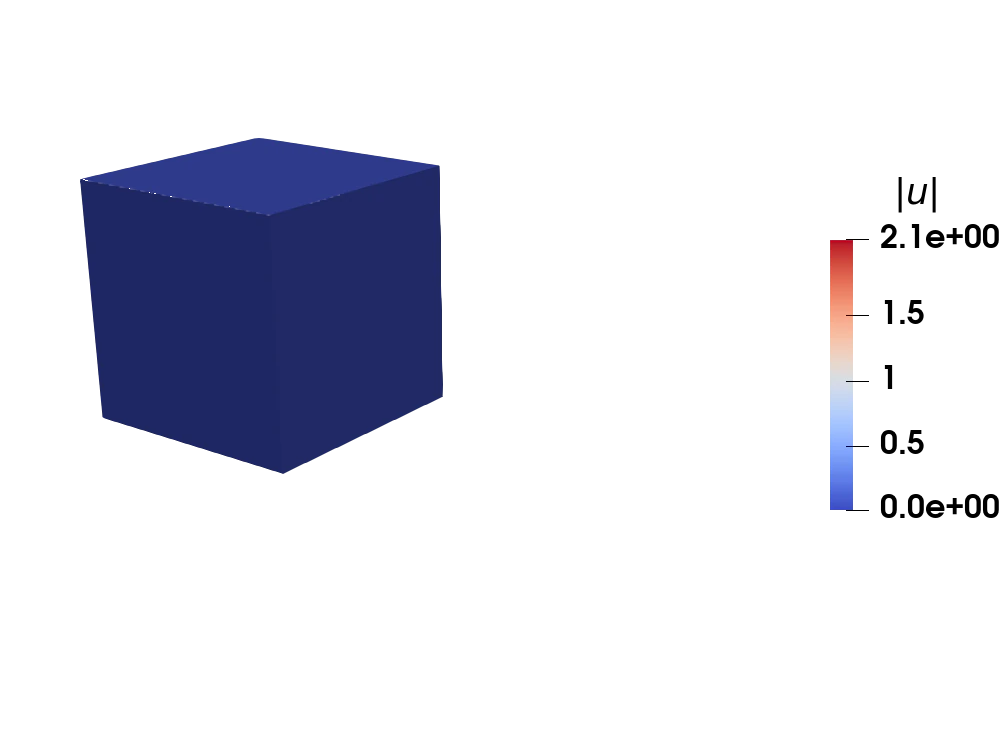
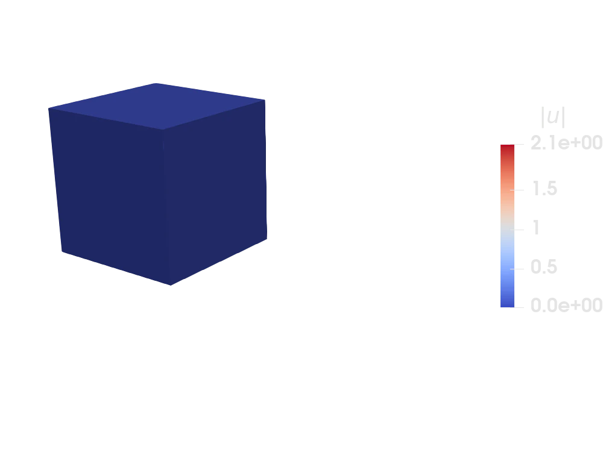

Nearly incompressible hyperelasticity


This example is also available as a Jupyter notebook: quasi_incompressible_hyperelasticity.ipynb
Introduction
In this example we study quasi- or nearly-incompressible hyperelasticity using the stable Taylor-Hood approximation. In spirit, this example is the nonlinear analogue of incompressible_elasticity and the incompressible analogue of hyperelasticity. Much of the code therefore follows from the above two examples. The problem is formulated in the undeformed or reference configuration with the displacement $\mathbf{u}$ and pressure $p$ being the unknown fields. We now briefly outline the formulation. Consider the standard hyperelasticity problem
\[ \mathbf{u} = \argmin_{\mathbf{v}\in\mathcal{K}(\Omega)}\Pi(\mathbf{v}),\quad \text{where}\quad \Pi(\mathbf{v}) = \int_\Omega \Psi(\mathbf{v}) \ \mathrm{d}\Omega\ .\]
where $\mathcal{K}(\Omega)$ is a suitable function space.
For clarity of presentation we ignore any non-zero surface tractions and body forces and instead consider only applied displacements (i.e. non-homogeneous dirichlet boundary conditions). Moreover we stick our attention to the standard Neo-Hookean stored energy density
\[ \Psi(\mathbf{u}) = \frac{\mu}{2}\left(I_1 - 3 \right) - \mu \log(J) + \frac{\lambda}{2}\left( J - 1\right){}^2,\]
where $I_1 = \mathrm{tr}(\mathbf{C}) = \mathrm{tr}(\mathbf{F}^\mathrm{T} \mathbf{F}) = F_{ij}F_{ij}$ and $J = \det(\mathbf{F})$ denote the standard invariants of the deformation gradient tensor $\mathbf{F} = \mathbf{I}+\nabla_{\mathbf{X}} \mathbf{u}$. The above problem is ill-posed in the limit of incompressibility (or near-incompressibility), namely when
\[ \lambda/\mu \rightarrow +\infty.\]
In order to alleviate the problem, we consider the partial legendre transform of the strain energy density $\Psi$ with respect to $J = \det(\mathbf{F})$, namely
\[ \widehat{\Psi}(\mathbf{u}, p) = \sup_{J} \left[ p(J - 1) - \frac{\mu}{2}\left(I_1 - 3 \right) + \mu \log(J) - \frac{\lambda}{2}\left( J - 1\right){}^2 \right].\]
The supremum, say $J^\star$, can be calculated in closed form by the first order optimality condition $\partial\widehat{\Psi}/\partial J = 0$. This gives
\[ J^\star(p) = \frac{\lambda + p + \sqrt{(\lambda + p){}^2 + 4 \lambda \mu }}{(2 \lambda)}.\]
Furthermore, taking the partial legendre transform of $\widehat{\Psi}$ once again, gives us back the original problem, i.e.
\[ \Psi(\mathbf{u}) = \Psi^\star(\mathbf{u}, p) = \sup_{p} \left[ p(J - 1) - p(J^\star - 1) + \frac{\mu}{2}\left(I_1 - 3 \right) - \mu \log(J^\star) + \frac{\lambda}{2}\left( J^\star - 1\right){}^2 \right].\]
Therefore our original hyperelasticity problem can now be reformulated as
\[ \inf_{\mathbf{u}\in\mathcal{K}(\Omega)}\sup_{p} \int_\Omega\Psi^{\star} (\mathbf{u}, p) \, \mathrm{d}\Omega.\]
The total (modified) energy $\Pi^\star$ can then be written as
\[ \Pi^\star(\mathbf{u}, p) = \int_\Omega p (J - J^\star) \ \mathrm{d}\Omega + \int_\Omega \frac{\mu}{2} \left( I_1 - 3\right) \ \mathrm{d}\Omega - \int_\Omega \mu\log(J^\star)\ \mathrm{d}\Omega + \int_\Omega \frac{\lambda}{2}\left( J^\star - 1 \right){}^2\ \mathrm{d}\Omega\]
The Euler-Lagrange equations corresponding to the above energy give us our governing PDEs in the weak form, namely
\[ \int_\Omega \frac{\partial\Psi^\star}{\partial \mathbf{F}}:\delta \mathbf{F} \ \mathrm{d}\Omega = 0\]
and
\[ \int_\Omega \frac{\partial \Psi^\star}{\partial p}\delta p \ \mathrm{d}\Omega = 0,\]
where $\delta \mathrm{F} = \delta \mathrm{grad}_0(\mathbf{u}) = \mathrm{grad}_0(\delta \mathbf{u})$ and $\delta \mathbf{u}$ and $\delta p$ denote arbitrary variations with respect to displacement and pressure (or the test functions). See the references below for a more detailed explanation of the above mathematical trick. Now, in order to apply Newton's method to the above problem, we further need to linearize the above equations and calculate the respective hessians (or tangents), namely, $\partial^2\Psi^\star/\partial \mathbf{F}^2$, $\partial^2\Psi^\star/\partial p^2$ and $\partial^2\Psi^\star/\partial \mathbf{F}\partial p$ which, using Tensors.jl, can be determined conveniently using automatic differentiation (see the code below). Hence we only need to define the above potential. The remainder of the example follows similarly.
References
- A paradigm for higher-order polygonal elements in finite elasticity using a gradient correction scheme, CMAME 2016, 306, 216–251
- Approximation of incompressible large deformation elastic problems: some unresolved issues, Computational Mechanics, 2013
Implementation
We now get to the actual code. First, we import the respective packages
using Ferrite, Tensors, ProgressMeter, VTKHDFusing BlockArrays, SparseArrays, LinearAlgebraand the corresponding struct to store our material properties.
struct NeoHooke μ::Float64 λ::Float64endWe then create a function to generate a simple test mesh on which to compute FE solution. We also mark the boundaries to later assign Dirichlet boundary conditions
function importTestGrid() grid = generate_grid(Tetrahedron, (5, 5, 5), zero(Vec{3}), ones(Vec{3})) addfacetset!(grid, "myBottom", x -> norm(x[2]) ≈ 0.0) addfacetset!(grid, "myBack", x -> norm(x[3]) ≈ 0.0) addfacetset!(grid, "myRight", x -> norm(x[1]) ≈ 1.0) addfacetset!(grid, "myLeft", x -> norm(x[1]) ≈ 0.0) return gridend;The function to create corresponding cellvalues for the displacement field u and pressure p follows in a similar fashion from the incompressible_elasticity example. Since both fields share the same quadrature rule and geometric interpolation, we collect them in a single MultiFieldCellValues. The values for each field are then accessed as cellvalues.u and cellvalues.p, while geometric quantities (e.g. getdetJdV) are queried on cellvalues directly.
function create_values(interpolation_u, interpolation_p) # quadrature rules qr = QuadratureRule{RefTetrahedron}(4) facet_qr = FacetQuadratureRule{RefTetrahedron}(4) # cellvalues for both the displacement, u, and pressure, p, fields cellvalues = MultiFieldCellValues(qr, (u = interpolation_u, p = interpolation_p)) # facetvalues for u facetvalues_u = FacetValues(facet_qr, interpolation_u) return cellvalues, facetvalues_uend;We now create the function for Ψ*
function Ψ(F, p, mp::NeoHooke) μ = mp.μ λ = mp.λ Ic = tr(tdot(F)) J = det(F) Js = (λ + p + sqrt((λ + p)^2.0 + 4.0 * λ * μ)) / (2.0 * λ) return p * (J - Js) + μ / 2 * (Ic - 3) - μ * log(Js) + λ / 2 * (Js - 1)^2end;and it's derivatives (required in computing the jacobian and hessian respectively)
function constitutive_driver(F, p, mp::NeoHooke) # Compute all derivatives in one function call ∂²Ψ∂F², ∂Ψ∂F = Tensors.hessian(y -> Ψ(y, p, mp), F, :all) ∂²Ψ∂p², ∂Ψ∂p = Tensors.hessian(y -> Ψ(F, y, mp), p, :all) ∂²Ψ∂F∂p = Tensors.gradient(q -> Tensors.gradient(y -> Ψ(y, q, mp), F), p) return ∂Ψ∂F, ∂²Ψ∂F², ∂Ψ∂p, ∂²Ψ∂p², ∂²Ψ∂F∂pend;The functions to create the DofHandler and ConstraintHandler (to assign corresponding boundary conditions) follow likewise from the incompressible elasticity example, namely
function create_dofhandler(grid, ipu, ipp) dh = DofHandler(grid) add!(dh, :u, ipu) # displacement dim = 3 add!(dh, :p, ipp) # pressure dim = 1 close!(dh) return dhend;We are simulating a uniaxial tensile loading of a unit cube. Hence we apply a displacement field (:u) in x direction on the right face. The left, bottom and back facets are fixed in the x, y and z components of the displacement so as to emulate the uniaxial nature of the loading.
function create_bc(dh) dbc = ConstraintHandler(dh) add!(dbc, Dirichlet(:u, getfacetset(dh.grid, "myLeft"), (x, t) -> zero(Vec{1}), [1])) add!(dbc, Dirichlet(:u, getfacetset(dh.grid, "myBottom"), (x, t) -> zero(Vec{1}), [2])) add!(dbc, Dirichlet(:u, getfacetset(dh.grid, "myBack"), (x, t) -> zero(Vec{1}), [3])) add!(dbc, Dirichlet(:u, getfacetset(dh.grid, "myRight"), (x, t) -> t * ones(Vec{1}), [1])) close!(dbc) Ferrite.update!(dbc, 0.0) return dbcend;Also, since we are considering incompressible hyperelasticity, an interesting quantity that we can compute is the deformed volume of the solid. It is easy to show that this is equal to ∫J*dΩ where J=det(F). This can be done at the level of each element (cell)
function calculate_element_volume(cell, cellvalues, ue) reinit!(cellvalues, cell) evol::Float64 = 0.0 for qp in 1:getnquadpoints(cellvalues) dΩ = getdetJdV(cellvalues, qp) ∇u = function_gradient(cellvalues.u, qp, ue) F = one(∇u) + ∇u J = det(F) evol += J * dΩ end return evolend;and then assembled over all the cells (elements)
function calculate_volume_deformed_mesh(w, dh::DofHandler, cellvalues) evol::Float64 = 0.0 for cell in CellIterator(dh) global_dofs = celldofs(cell) nu = getnbasefunctions(cellvalues.u) global_dofs_u = global_dofs[1:nu] ue = w[global_dofs_u] δevol = calculate_element_volume(cell, cellvalues, ue) evol += δevol end return evolend;The function to assemble the element stiffness matrix for each element in the mesh now has a block structure like in incompressible_elasticity.
function assemble_element!(Ke, fe, cell, cellvalues, mp, ue, pe) # Reinitialize cell values ublock, pblock = 1, 2 reinit!(cellvalues, cell) n_basefuncs_u = getnbasefunctions(cellvalues.u) n_basefuncs_p = getnbasefunctions(cellvalues.p) for qp in 1:getnquadpoints(cellvalues) dΩ = getdetJdV(cellvalues, qp) # Compute deformation gradient F ∇u = function_gradient(cellvalues.u, qp, ue) p = function_value(cellvalues.p, qp, pe) F = one(∇u) + ∇u # Compute first Piola-Kirchhoff stress and tangent modulus ∂Ψ∂F, ∂²Ψ∂F², ∂Ψ∂p, ∂²Ψ∂p², ∂²Ψ∂F∂p = constitutive_driver(F, p, mp) # Loop over the `u`-test functions to calculate the `u`-`u` and `u`-`p` blocks for i in 1:n_basefuncs_u # gradient of the test function ∇δui = shape_gradient(cellvalues.u, qp, i) # Add contribution to the residual from this test function fe[BlockIndex((ublock), (i))] += (∇δui ⊡ ∂Ψ∂F) * dΩ ∇δui∂S∂F = ∇δui ⊡ ∂²Ψ∂F² for j in 1:n_basefuncs_u ∇δuj = shape_gradient(cellvalues.u, qp, j) # Add contribution to the tangent Ke[BlockIndex((ublock, ublock), (i, j))] += (∇δui∂S∂F ⊡ ∇δuj) * dΩ end # Loop over the `p`-test functions for j in 1:n_basefuncs_p δp = shape_value(cellvalues.p, qp, j) # Add contribution to the tangent Ke[BlockIndex((ublock, pblock), (i, j))] += (∂²Ψ∂F∂p ⊡ ∇δui) * δp * dΩ end end # Loop over the `p`-test functions to calculate the `p-`u` and `p`-`p` blocks for i in 1:n_basefuncs_p δp = shape_value(cellvalues.p, qp, i) fe[BlockIndex((pblock), (i))] += (δp * ∂Ψ∂p) * dΩ for j in 1:n_basefuncs_u ∇δuj = shape_gradient(cellvalues.u, qp, j) Ke[BlockIndex((pblock, ublock), (i, j))] += ∇δuj ⊡ ∂²Ψ∂F∂p * δp * dΩ end for j in 1:n_basefuncs_p δq = shape_value(cellvalues.p, qp, j) Ke[BlockIndex((pblock, pblock), (i, j))] += δp * ∂²Ψ∂p² * δq * dΩ end end end returnend;The only thing that changes in the assembly of the global stiffness matrix is slicing the corresponding element dofs for the displacement (see global_dofsu) and pressure (global_dofsp).
function assemble_global!( K::SparseMatrixCSC, f, cellvalues::MultiFieldCellValues, dh::DofHandler, mp::NeoHooke, w ) nu = getnbasefunctions(cellvalues.u) np = getnbasefunctions(cellvalues.p) # start_assemble resets K and f fe = BlockedArray(zeros(nu + np), [nu, np]) # local force vector ke = BlockedArray(zeros(nu + np, nu + np), [nu, np], [nu, np]) # local stiffness matrix assembler = start_assemble(K, f) # Loop over all cells in the grid for cell in CellIterator(dh) global_dofs = celldofs(cell) global_dofsu = global_dofs[1:nu] # first nu dofs are displacement global_dofsp = global_dofs[(nu + 1):end] # last np dofs are pressure @assert size(global_dofs, 1) == nu + np # sanity check ue = w[global_dofsu] # displacement dofs for the current cell pe = w[global_dofsp] # pressure dofs for the current cell fill!(ke, 0.0) fill!(fe, 0.0) assemble_element!(ke, fe, cell, cellvalues, mp, ue, pe) assemble!(assembler, global_dofs, ke, fe) end returnend;We now define a main function solve. For nonlinear quasistatic problems we often like to parameterize the solution in terms of a pseudo time like parameter, which in this case is used to gradually apply the boundary displacement on the right face. Also for definiteness, we consider λ/μ = 10⁴
function solve(interpolation_u, interpolation_p) # import the mesh grid = importTestGrid() # Material parameters μ = 1.0 λ = 1.0e4 * μ mp = NeoHooke(μ, λ) # Create the DofHandler and CellValues dh = create_dofhandler(grid, interpolation_u, interpolation_p) cellvalues, facetvalues_u = create_values(interpolation_u, interpolation_p) # Create the DirichletBCs dbc = create_bc(dh) # Pre-allocation of vectors for the solution and Newton increments _ndofs = ndofs(dh) w = zeros(_ndofs) ΔΔw = zeros(_ndofs) apply!(w, dbc) # Create the sparse matrix and residual vector K = allocate_matrix(dh) f = zeros(_ndofs) # We run the simulation parameterized by a time like parameter. `Tf` denotes the final value # of this parameter, and Δt denotes its increment in each step Tf = 2.0 Δt = 0.1 NEWTON_TOL = 1.0e-8 vtkhdf = VTKHDFGridFile("hyperelasticity_incomp_mixed.vtkhdf", dh; temporal = true) for t in 0.0:Δt:Tf # Perform Newton iterations Ferrite.update!(dbc, t) apply!(w, dbc) newton_itr = -1 prog = ProgressMeter.ProgressThresh(NEWTON_TOL; desc = "Solving @ time $t of $Tf;") fill!(ΔΔw, 0.0) while true newton_itr += 1 assemble_global!(K, f, cellvalues, dh, mp, w) norm_res = norm(f[Ferrite.free_dofs(dbc)]) apply_zero!(K, f, dbc) # Only display output at specific load steps if t % (5 * Δt) == 0 ProgressMeter.update!(prog, norm_res; showvalues = [(:iter, newton_itr)]) end if norm_res < NEWTON_TOL break elseif newton_itr > 30 error("Reached maximum Newton iterations, aborting") end # Compute the incremental `dof`-vector (both displacement and pressure) ΔΔw .= K \ f apply_zero!(ΔΔw, dbc) w .-= ΔΔw end # Save the solution fields write_timestep(vtkhdf, t) do vtk write_solution(vtk, dh, w) end end close(vtkhdf) vol_def = calculate_volume_deformed_mesh(w, dh, cellvalues) print("Deformed volume is $vol_def") return vol_defend;We can now test the solution using the Taylor-Hood approximation
quadratic_u = Lagrange{RefTetrahedron, 2}()^3linear_p = Lagrange{RefTetrahedron, 1}()vol_def = solve(quadratic_u, linear_p)1.0000666599862356The deformed volume is indeed close to 1 (as should be for a nearly incompressible material).
Plain program
Here follows a version of the program without any comments. The file is also available here: quasi_incompressible_hyperelasticity.jl.
using Ferrite, Tensors, ProgressMeter, VTKHDFusing BlockArrays, SparseArrays, LinearAlgebrastruct NeoHooke μ::Float64 λ::Float64endfunction importTestGrid() grid = generate_grid(Tetrahedron, (5, 5, 5), zero(Vec{3}), ones(Vec{3})) addfacetset!(grid, "myBottom", x -> norm(x[2]) ≈ 0.0) addfacetset!(grid, "myBack", x -> norm(x[3]) ≈ 0.0) addfacetset!(grid, "myRight", x -> norm(x[1]) ≈ 1.0) addfacetset!(grid, "myLeft", x -> norm(x[1]) ≈ 0.0) return gridend;function create_values(interpolation_u, interpolation_p) # quadrature rules qr = QuadratureRule{RefTetrahedron}(4) facet_qr = FacetQuadratureRule{RefTetrahedron}(4) # cellvalues for both the displacement, u, and pressure, p, fields cellvalues = MultiFieldCellValues(qr, (u = interpolation_u, p = interpolation_p)) # facetvalues for u facetvalues_u = FacetValues(facet_qr, interpolation_u) return cellvalues, facetvalues_uend;function Ψ(F, p, mp::NeoHooke) μ = mp.μ λ = mp.λ Ic = tr(tdot(F)) J = det(F) Js = (λ + p + sqrt((λ + p)^2.0 + 4.0 * λ * μ)) / (2.0 * λ) return p * (J - Js) + μ / 2 * (Ic - 3) - μ * log(Js) + λ / 2 * (Js - 1)^2end;function constitutive_driver(F, p, mp::NeoHooke) # Compute all derivatives in one function call ∂²Ψ∂F², ∂Ψ∂F = Tensors.hessian(y -> Ψ(y, p, mp), F, :all) ∂²Ψ∂p², ∂Ψ∂p = Tensors.hessian(y -> Ψ(F, y, mp), p, :all) ∂²Ψ∂F∂p = Tensors.gradient(q -> Tensors.gradient(y -> Ψ(y, q, mp), F), p) return ∂Ψ∂F, ∂²Ψ∂F², ∂Ψ∂p, ∂²Ψ∂p², ∂²Ψ∂F∂pend;function create_dofhandler(grid, ipu, ipp) dh = DofHandler(grid) add!(dh, :u, ipu) # displacement dim = 3 add!(dh, :p, ipp) # pressure dim = 1 close!(dh) return dhend;function create_bc(dh) dbc = ConstraintHandler(dh) add!(dbc, Dirichlet(:u, getfacetset(dh.grid, "myLeft"), (x, t) -> zero(Vec{1}), [1])) add!(dbc, Dirichlet(:u, getfacetset(dh.grid, "myBottom"), (x, t) -> zero(Vec{1}), [2])) add!(dbc, Dirichlet(:u, getfacetset(dh.grid, "myBack"), (x, t) -> zero(Vec{1}), [3])) add!(dbc, Dirichlet(:u, getfacetset(dh.grid, "myRight"), (x, t) -> t * ones(Vec{1}), [1])) close!(dbc) Ferrite.update!(dbc, 0.0) return dbcend;function calculate_element_volume(cell, cellvalues, ue) reinit!(cellvalues, cell) evol::Float64 = 0.0 for qp in 1:getnquadpoints(cellvalues) dΩ = getdetJdV(cellvalues, qp) ∇u = function_gradient(cellvalues.u, qp, ue) F = one(∇u) + ∇u J = det(F) evol += J * dΩ end return evolend;function calculate_volume_deformed_mesh(w, dh::DofHandler, cellvalues) evol::Float64 = 0.0 for cell in CellIterator(dh) global_dofs = celldofs(cell) nu = getnbasefunctions(cellvalues.u) global_dofs_u = global_dofs[1:nu] ue = w[global_dofs_u] δevol = calculate_element_volume(cell, cellvalues, ue) evol += δevol end return evolend;function assemble_element!(Ke, fe, cell, cellvalues, mp, ue, pe) # Reinitialize cell values ublock, pblock = 1, 2 reinit!(cellvalues, cell) n_basefuncs_u = getnbasefunctions(cellvalues.u) n_basefuncs_p = getnbasefunctions(cellvalues.p) for qp in 1:getnquadpoints(cellvalues) dΩ = getdetJdV(cellvalues, qp) # Compute deformation gradient F ∇u = function_gradient(cellvalues.u, qp, ue) p = function_value(cellvalues.p, qp, pe) F = one(∇u) + ∇u # Compute first Piola-Kirchhoff stress and tangent modulus ∂Ψ∂F, ∂²Ψ∂F², ∂Ψ∂p, ∂²Ψ∂p², ∂²Ψ∂F∂p = constitutive_driver(F, p, mp) # Loop over the `u`-test functions to calculate the `u`-`u` and `u`-`p` blocks for i in 1:n_basefuncs_u # gradient of the test function ∇δui = shape_gradient(cellvalues.u, qp, i) # Add contribution to the residual from this test function fe[BlockIndex((ublock), (i))] += (∇δui ⊡ ∂Ψ∂F) * dΩ ∇δui∂S∂F = ∇δui ⊡ ∂²Ψ∂F² for j in 1:n_basefuncs_u ∇δuj = shape_gradient(cellvalues.u, qp, j) # Add contribution to the tangent Ke[BlockIndex((ublock, ublock), (i, j))] += (∇δui∂S∂F ⊡ ∇δuj) * dΩ end # Loop over the `p`-test functions for j in 1:n_basefuncs_p δp = shape_value(cellvalues.p, qp, j) # Add contribution to the tangent Ke[BlockIndex((ublock, pblock), (i, j))] += (∂²Ψ∂F∂p ⊡ ∇δui) * δp * dΩ end end # Loop over the `p`-test functions to calculate the `p-`u` and `p`-`p` blocks for i in 1:n_basefuncs_p δp = shape_value(cellvalues.p, qp, i) fe[BlockIndex((pblock), (i))] += (δp * ∂Ψ∂p) * dΩ for j in 1:n_basefuncs_u ∇δuj = shape_gradient(cellvalues.u, qp, j) Ke[BlockIndex((pblock, ublock), (i, j))] += ∇δuj ⊡ ∂²Ψ∂F∂p * δp * dΩ end for j in 1:n_basefuncs_p δq = shape_value(cellvalues.p, qp, j) Ke[BlockIndex((pblock, pblock), (i, j))] += δp * ∂²Ψ∂p² * δq * dΩ end end end returnend;function assemble_global!( K::SparseMatrixCSC, f, cellvalues::MultiFieldCellValues, dh::DofHandler, mp::NeoHooke, w ) nu = getnbasefunctions(cellvalues.u) np = getnbasefunctions(cellvalues.p) # start_assemble resets K and f fe = BlockedArray(zeros(nu + np), [nu, np]) # local force vector ke = BlockedArray(zeros(nu + np, nu + np), [nu, np], [nu, np]) # local stiffness matrix assembler = start_assemble(K, f) # Loop over all cells in the grid for cell in CellIterator(dh) global_dofs = celldofs(cell) global_dofsu = global_dofs[1:nu] # first nu dofs are displacement global_dofsp = global_dofs[(nu + 1):end] # last np dofs are pressure @assert size(global_dofs, 1) == nu + np # sanity check ue = w[global_dofsu] # displacement dofs for the current cell pe = w[global_dofsp] # pressure dofs for the current cell fill!(ke, 0.0) fill!(fe, 0.0) assemble_element!(ke, fe, cell, cellvalues, mp, ue, pe) assemble!(assembler, global_dofs, ke, fe) end returnend;function solve(interpolation_u, interpolation_p) # import the mesh grid = importTestGrid() # Material parameters μ = 1.0 λ = 1.0e4 * μ mp = NeoHooke(μ, λ) # Create the DofHandler and CellValues dh = create_dofhandler(grid, interpolation_u, interpolation_p) cellvalues, facetvalues_u = create_values(interpolation_u, interpolation_p) # Create the DirichletBCs dbc = create_bc(dh) # Pre-allocation of vectors for the solution and Newton increments _ndofs = ndofs(dh) w = zeros(_ndofs) ΔΔw = zeros(_ndofs) apply!(w, dbc) # Create the sparse matrix and residual vector K = allocate_matrix(dh) f = zeros(_ndofs) # We run the simulation parameterized by a time like parameter. `Tf` denotes the final value # of this parameter, and Δt denotes its increment in each step Tf = 2.0 Δt = 0.1 NEWTON_TOL = 1.0e-8 vtkhdf = VTKHDFGridFile("hyperelasticity_incomp_mixed.vtkhdf", dh; temporal = true) for t in 0.0:Δt:Tf # Perform Newton iterations Ferrite.update!(dbc, t) apply!(w, dbc) newton_itr = -1 prog = ProgressMeter.ProgressThresh(NEWTON_TOL; desc = "Solving @ time $t of $Tf;") fill!(ΔΔw, 0.0) while true newton_itr += 1 assemble_global!(K, f, cellvalues, dh, mp, w) norm_res = norm(f[Ferrite.free_dofs(dbc)]) apply_zero!(K, f, dbc) # Only display output at specific load steps if t % (5 * Δt) == 0 ProgressMeter.update!(prog, norm_res; showvalues = [(:iter, newton_itr)]) end if norm_res < NEWTON_TOL break elseif newton_itr > 30 error("Reached maximum Newton iterations, aborting") end # Compute the incremental `dof`-vector (both displacement and pressure) ΔΔw .= K \ f apply_zero!(ΔΔw, dbc) w .-= ΔΔw end # Save the solution fields write_timestep(vtkhdf, t) do vtk write_solution(vtk, dh, w) end end close(vtkhdf) vol_def = calculate_volume_deformed_mesh(w, dh, cellvalues) print("Deformed volume is $vol_def") return vol_defend;quadratic_u = Lagrange{RefTetrahedron, 2}()^3linear_p = Lagrange{RefTetrahedron, 1}()vol_def = solve(quadratic_u, linear_p)This page was generated using Literate.jl.